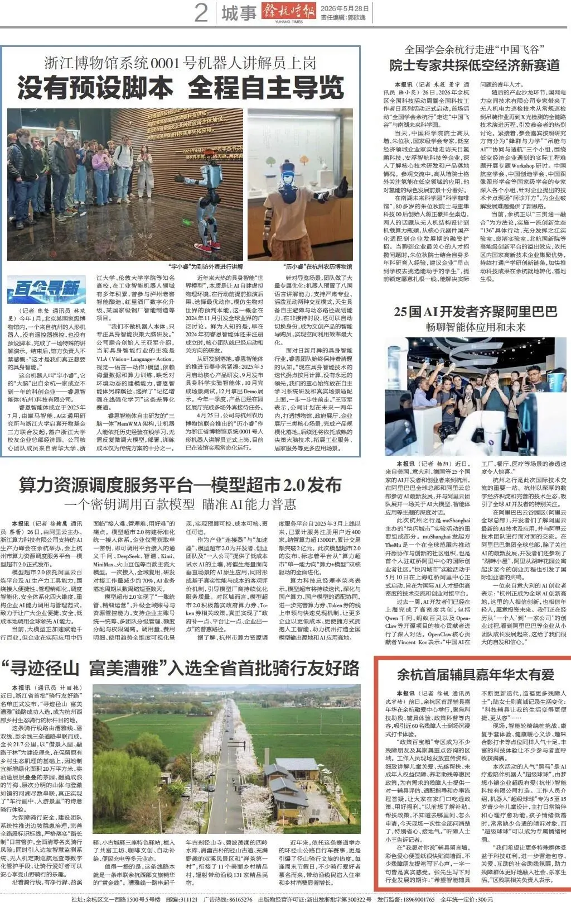
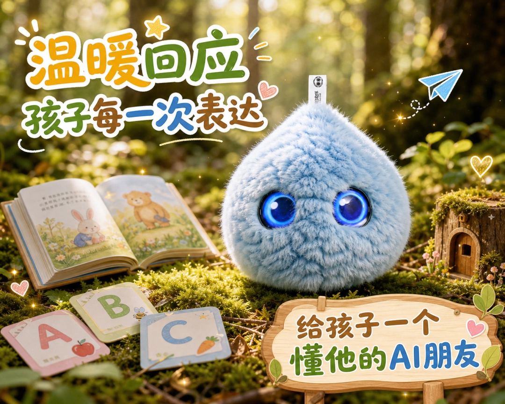

被官媒点名的 “⼈⽓⿊⻢”，藏着怎样的温暖？
在报道中，超级球球被称为本次嘉年华⾥的 “⼈⽓⿊⻢AI疗愈陪伴机器⼈”。它专为5-12岁的⻘少年⼉童设计，以软萌的外形和温柔的互动，成为现场最受孩⼦们欢迎的伙伴。在体验区⾥，孩⼦们围着它聊天、互动，把⼼⾥话讲给它听。对他们来说，这不是⼀台冰冷的机器，⽽是⼀个永远耐⼼倾听、永远正向回应的朋友。
科技的终极浪漫，是看⻅每⼀个⼈

这次被报纸点名，对我们来说，不只是⼀次曝光，更是⼀份被认可的温暖。 它让我们看到，当科技跳出实验室，⾛进真实的场景，就能变成触⼿可及的陪伴。
从展会现场到报纸版⾯，从孩⼦们的笑声到官媒的报道，超级球球正在⽤⾃⼰的⽅式，传递AI的温度。 它⽤共情对话和情绪陪伴，告诉每⼀个孩⼦：你的情绪，值得被认真倾听。
未来，我们也会带着这份认可，继续把这份温暖带给更多孩⼦，让科技，真正服务于⼈。
